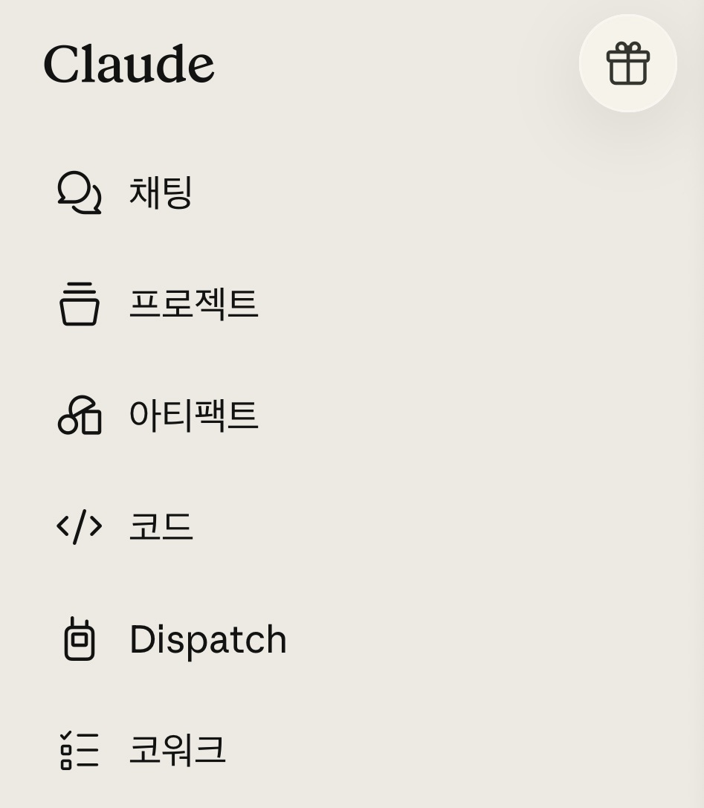
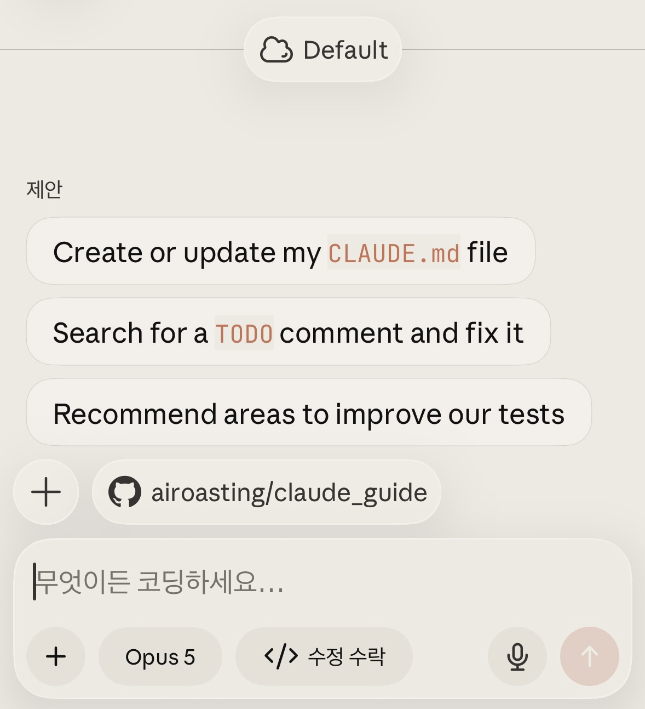
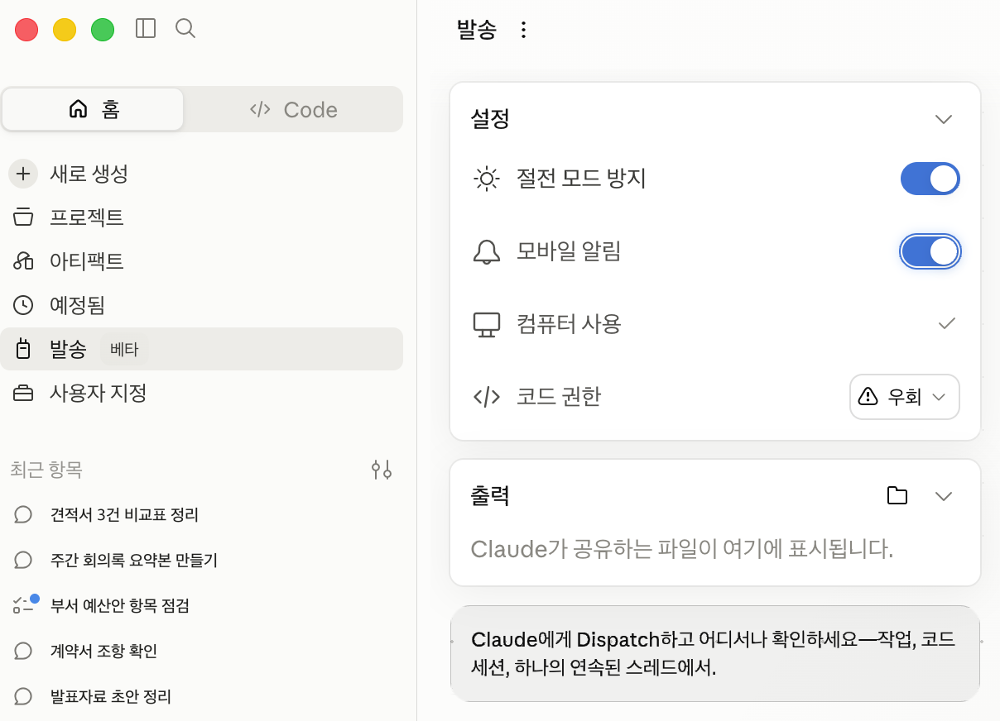

여섯 개 메뉴, 뭐가 뭔지부터 살펴봅시다

채팅
평소 쓰는 대화 화면입니다. 스마트폰 안에서 바로 답이 나옵니다. 잘 묻는 법은 프롬프트 잘 쓰는 법에 있습니다.
프로젝트
규칙과 자료를 넣어 두고 매번 같은 조건으로 일을 시키는 공간입니다. 설정법은 프로젝트 만들기에 있습니다.
아티팩트
Claude가 만들어 낸 문서, 표, 작은 웹 도구가 모이는 곳입니다. 만드는 실습은 실전 과제 6번에 있습니다.
코드
프로그램을 만들고 고치는 작업을 맡기는 탭입니다.
Dispatch
스마트폰에서 일을 맡기면 내 컴퓨터가 대신 하고 결과만 보내 줍니다.
코워크
데스크톱 앱이 내 파일을 직접 열어 정리해 줍니다.
채팅, 프로젝트, 아티팩트는 스마트폰 안에서 끝나는 일입니다. 코드, Dispatch, 코워크는 내 컴퓨터에서 도는 일을 스마트폰으로 지켜보는 창구입니다.
채팅, 코드, Dispatch, 코워크를 한 눈에 비교하기
claude.ai 웹에서 먼저
터미널에서 먼저
처음부터 스마트폰용
맥 데스크톱에서 먼저
코드 탭에서는 어느 컴퓨터에 맡길지만 정하면 됩니다
claude remote-control을 실행하거나, 열려 있는 세션에서 /remote-control을 입력한 뒤 QR을 찍습니다클라우드 세션 화면은 이렇게 생겼습니다

- 맨 위 Default
처음 만들 때 붙는 환경 이름입니다. 저장소마다 다른 환경을 만들면 여기서 골라 씁니다. - GitHub 저장소
어느 저장소에서 일할지 고르는 자리입니다. 여기가 비어 있으면 아직 GitHub가 연결되지 않은 것입니다. - 입력창
할 일을 문장으로 적습니다. 파일이나 함수 이름을 짚어 주면 결과가 좋아집니다. - 아래 줄
왼쪽은 쓸 모델, 오른쪽은 권한 모드입니다. 화면에서는 Opus 5와 수정 수락이 선택되어 있습니다.
- GitHub 저장소가 없으면 시작할 수 없습니다. 클라우드 세션은 저장소를 복제해서 일하는 방식입니다. 없다면 GitHub에서 빈 저장소를 하나 먼저 만듭니다.
- 처음 한 번은 연결 절차가 필요합니다. claude.ai/code에 들어가 로그인하면 GitHub를 연결하라는 안내가 뜹니다. Claude GitHub 앱을 설치해 접근을 허용하고, 이어서 나오는 환경 만들기 화면은 기본값 그대로 만들면 됩니다.
- 저장소 목록이 비어 있다면 연결한 GitHub 계정이 그 저장소를 볼 수 있는지 확인합니다. 회사 계정이면 관리자가 막아 둔 경우도 있습니다.
- GitHub를 연결하고 싶지 않다면 리모트 컨트롤을 쓰면 됩니다. 내 컴퓨터에서 돌기 때문에 GitHub가 필요 없습니다.
리모트 컨트롤이 켜져 있으면 긴 작업이 끝나거나 결정이 필요할 때 스마트폰으로 알림이 옵니다. 프롬프트에 "테스트 끝나면 알려줘"처럼 적어 두어도 됩니다. 컴퓨터가 잠들었다가 깨어나면 세션은 다시 연결됩니다.
- 터미널 전용 명령은 못 씁니다.
/plugin,/resume처럼 터미널 화면에서만 도는 명령은 앱에서 동작하지 않습니다. - 권한 모드는 세션에 따라 고를 수 있는 것이 다릅니다. 리모트 컨트롤은 수동·수정 수락·계획, 클라우드 세션은 수정 수락·계획·자동입니다. 터미널에만 있는 '권한 무시'는 앱에서 고를 수 없습니다.
- 코드 탭이 안 보이면 요금제 문제입니다. 개인 계정이면 요금제를 올려야 하고, 회사 계정이면 관리자에게 이 기능을 열어 달라고 요청해야 합니다.
수동은 파일을 고치거나 명령을 돌리기 전에 매번 물어봅니다. 수정 수락은 파일 수정과 폴더 정리 정도는 묻지 않고 진행합니다. 계획은 먼저 읽고 방법을 제안한 뒤 승인을 기다립니다. 자동은 안전 점검을 뒤에서 돌리면서 묻지 않고 끝까지 갑니다. 처음에는 수동이나 계획으로 두고, 익숙해지면 수정 수락으로 옮기면 됩니다.
스마트폰이 내 컴퓨터의 리모컨이 됩니다
코드를 고치는 일은 클로드 코드로, 문서와 자료를 다루는 일은 코워크로 알아서 보냅니다. 과정은 생략하고 결과만 메시지로 옵니다. 표 한 장, 메모, 비교 자료 같은 것입니다. 다 끝났거나 승인이 필요하면 알림이 옵니다.
설정하기
- 양쪽 앱을 최신으로 업데이트합니다
컴퓨터에 Claude 데스크톱 앱, 스마트폰에 Claude 앱을 깔고 같은 계정으로 로그인합니다. 두 기기 모두 인터넷에 연결돼 있어야 합니다. - 내 컴퓨터에서 Dispatch를 켭니다
데스크톱 앱 왼쪽 메뉴에서 발송을 누르면 설정 카드가 나옵니다. 절전 모드 방지는 화면이 꺼져도 작업을 이어갈지, 모바일 알림은 다 됐을 때 스마트폰으로 알릴지 정하는 항목입니다. 앱 버전에 따라 화면은 조금씩 다릅니다. - 스마트폰에서 일을 시킵니다
이제 스마트폰의 Dispatch에 할 일을 적어 보내면 컴퓨터가 받아 처리합니다.
발송 화면은 이렇게 생겼습니다
데스크톱 앱의 발송이 Dispatch입니다. 오른쪽 설명을 누르거나 마우스를 올리면 화면의 해당 자리에 표시가 나타납니다.

- 발송여는 자리
왼쪽 메뉴에서 누릅니다. 아직 베타 표시가 붙어 있습니다.
- 절전 모드 방지켜기
컴퓨터가 잠들어도 작업을 이어갑니다. 꺼 두면 자리를 비운 사이 멈춥니다.
- 모바일 알림켜기
다 됐거나 승인이 필요할 때 스마트폰으로 알려 줍니다.
- 컴퓨터 사용필요할 때만
Claude가 화면을 직접 조작합니다. 연결 통로가 없는 프로그램에만 씁니다.
- 코드 권한물어보기로
화면의 우회는 묻지 않고 진행하는 설정입니다. 익숙해지기 전에는 물어보는 쪽에 두세요.
- 출력저장 폴더
Claude가 만들어 공유하는 파일이 여기에 쌓입니다.
- Pro 또는 Max 요금제여야 합니다. Team과 Enterprise에서는 Dispatch를 쓸 수 없습니다.
- 컴퓨터가 깨어 있고 데스크톱 앱이 열려 있어야 합니다. 일은 클라우드가 아니라 내 컴퓨터에서 돌기 때문입니다. 컴퓨터를 꺼야 하는 상황이라면 코드 탭의 클라우드 세션을 쓰세요.
- 화면을 직접 조작하는 기능은 미리보기 단계입니다. 연결 통로가 없는 프로그램을 다룰 때만 쓰고, Pro와 Max에서만 열립니다.
- 대화는 하나로 유지됩니다. Dispatch 안에서 별도 대화를 새로 만들 수는 없고, 작업이 한 대화에 계속 쌓입니다.
코워크는 컴퓨터가 직접 파일을 열어 일합니다
채팅은 답을 말로 해 주고 끝납니다. 코워크는 데스크톱 앱이 내 컴퓨터의 파일을 직접 열어 정리하고, 결과물을 파일로 만들어 둡니다. 2026년 4월 9일 맥과 윈도우에 정식 제공됐습니다.
스마트폰의 코워크 메뉴는 컴퓨터에서 돌고 있는 작업을 들여다보는 창에 가깝습니다. 스마트폰에서 새로 시킬 때는 Dispatch에 말을 걸면 됩니다.
고르지 않아도 됩니다. Dispatch에 그냥 맡기면 자료를 정리하는 일은 코워크로, 코드를 고치는 일은 클로드 코드로 Claude가 알아서 보냅니다.
코워크와 클로드 코드는 둘 다 파일을 직접 다룹니다. 터미널 없이 시작하는 방법은 클로드 코드 101에 정리돼 있습니다.
오늘 무엇부터 해 볼까
스마트폰 앱에서 설정을 열어 요금제를 봅니다. Pro나 Max면 Dispatch까지 다 쓸 수 있습니다. 무료나 Team, Enterprise라면 Dispatch는 건너뛰고 채팅과 프로젝트부터 쓰면 됩니다.
컴퓨터에서 데스크톱 앱을 열고 위의 설정 순서를 그대로 따라 합니다. 다 켜고 나서 스마트폰으로 이렇게 한 줄 보내 보세요.
다 되면 스마트폰으로 알림이 옵니다. 승인을 물어보면 무엇을 하려는지 읽고 누르세요. 이 한 번을 해 보면 나머지 메뉴도 감이 잡힙니다.
헷갈릴 때 세 가지만 물어보세요
- 컴퓨터를 꺼 둬야 하나요?
그렇다면 코드 탭의 클라우드 세션뿐입니다. 나머지 둘은 내 컴퓨터가 켜져 있어야 합니다. - 코드를 고치는 일인가요?
맞으면 코드 탭, 아니면 Dispatch입니다. 애매하면 Dispatch에 맡기고 Claude가 고르게 두면 됩니다. - Claude가 열 수 없는 프로그램인가요?
연결 통로가 없는 프로그램이라면 컴퓨터 사용을 켭니다. 화면을 직접 조작하는 방식이라 느리고 실수 여지가 있으니 마지막 선택지로 둡니다.
- 내 컴퓨터에서 도는 일입니다. Dispatch와 리모트 컨트롤은 실제로 내 파일을 읽고 고칩니다. 되돌리기 어려운 작업은 승인 알림을 그냥 넘기지 마세요.
- 회사 기기라면 정책을 먼저 봅니다. 파일 접근과 화면 조작을 켜는 일이라 IT 정책에 걸릴 수 있습니다.
- 무엇을 넣을지 정해 두세요. 판단 기준은 AI와 안전하게 일하는 법에 다섯 가지로 정리돼 있습니다.
자주 묻는 것
아닙니다. Pro 또는 Max 요금제가 필요합니다. Team과 Enterprise 계정에서도 제공되지 않습니다.
코드 탭의 클라우드 세션은 됩니다. Dispatch와 리모트 컨트롤은 내 컴퓨터에서 돌기 때문에 컴퓨터가 켜져 있어야 합니다.
그건 스마트폰에서 맡기는 방식이 아니라 예약 실행입니다. Routines 예약 실행과 헤르메스 에이전트를 보세요.
됩니다. 아이패드에는 같은 iOS 앱을 설치해서 씁니다.
출처: 앤트로픽 공식 문서 Claude Code on mobile, Put Claude to work on your computer(2026년 3월 23일), Assign tasks from anywhere in Claude Cowork. 2026년 7월 26일 확인.